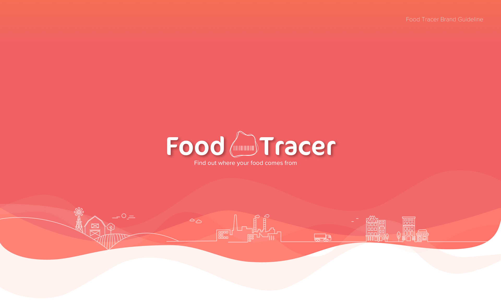
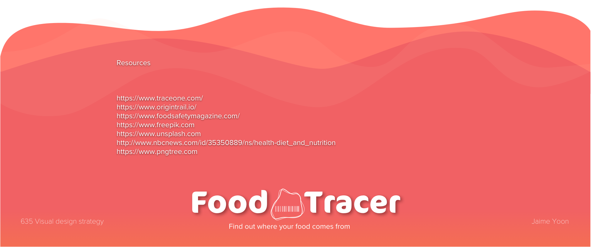

2018
Task: Brand Guideline + UX/UI Design, Visual Design
Focused on the making a brand guideline and learn how to deliver the design specs to a development team.
Foodtracer is an application to track the food supply chain in a new way.